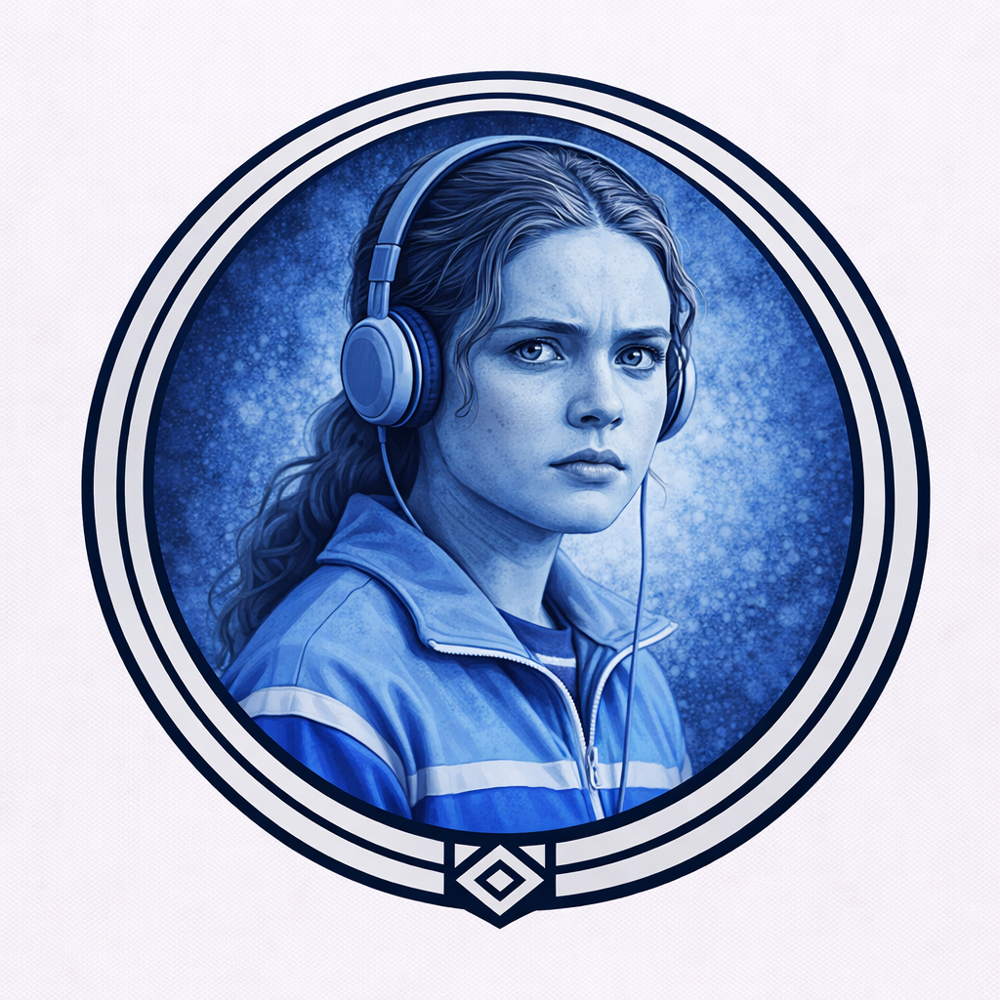
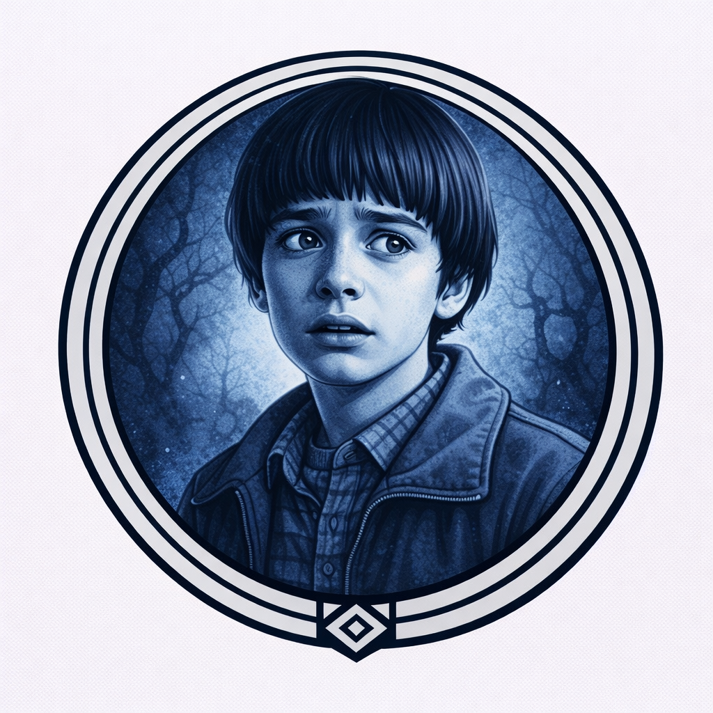
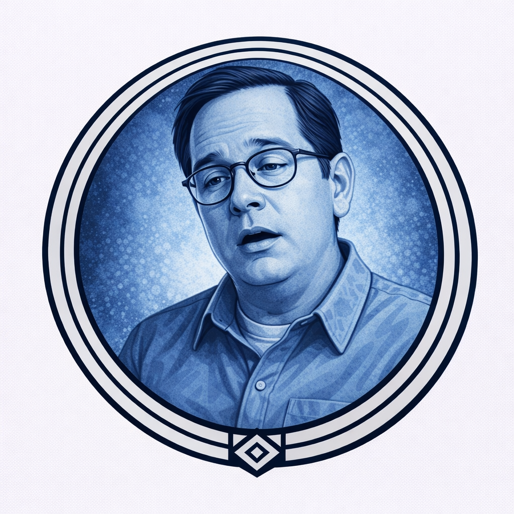
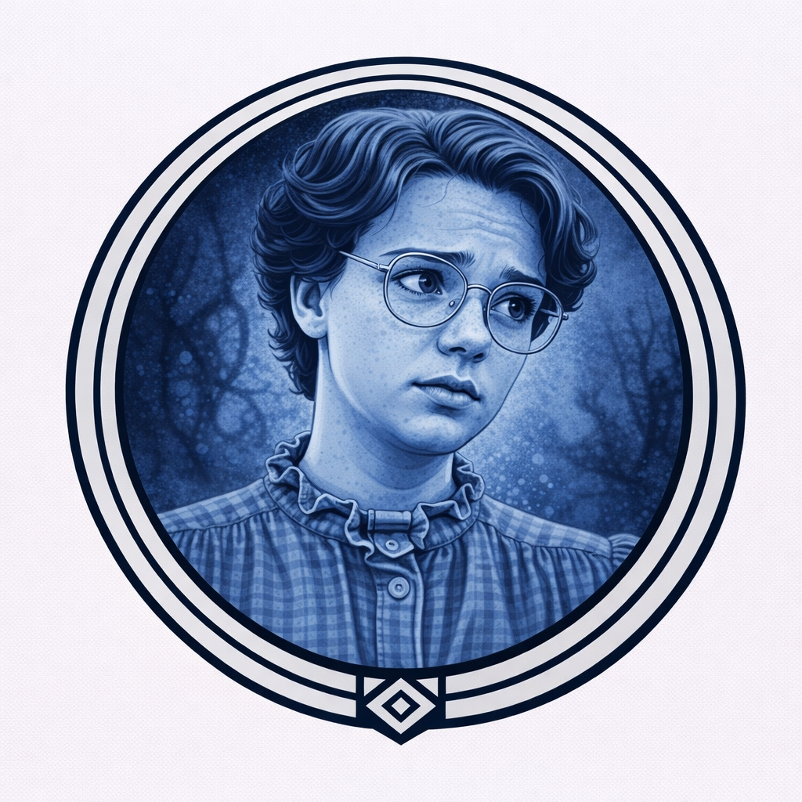

Каждую ночь* выбираете игрока: узнаёте, просыпался ли он этой ночью.
Один раз за игру днём можете публично назвать игрока — он умирает; ваша ночная способность с этого момента также не работает.

Каждую ночь* выбираете игрока (не себя): если этой ночью он должен умереть — он не умирает.
Если вы спасли его от Демона — следующей ночью вы умираете.

Каждую ночь* выбираете игрока (не себя): он не может умереть этой ночью. Следующую ночь вы пропускаете.
Можете отказаться выбирать — тогда кулдауна нет.

Каждую ночь* выбираете игрока: узнаёте, корректно ли сработала его способность этой ночью.
Ваша информация всегда корректна.

В первую ночь ведущий показывает вам двух других игроков и одну роль Приспешника: один из этих двух играет эту роль.

Каждую ночь* узнаёте: Демон ближе к вам слева или справа. Считаются только живые игроки.
Демогоргон не может вас убить.

Каждую ночь* выбираете игрока (не себя): узнаёте, действует ли на него негативный эффект (Метка Векны, отравление, опьянение, безумие).

Каждую ночь* выбираете игрока: если он просыпался этой ночью, узнаёте, совпадает ли его текущая команда с вашей.

Вы не можете умереть от Демона ни при каких обстоятельствах.
Если Демон выбрал вас целью — вы получаете знак ночью и до конца игры не можете номинировать.

Каждую ночь* выбираете игрока: узнаёте, был ли он целью активной злой способности и была ли это способность Демона или Приспешника.

В первую ночь ведущий показывает имена двух других игроков: оба играют за добро.

Каждую ночь* выбираете игрока и любую роль из сета: ведущий говорит «да» или «нет».

Один раз за игру ночью можете объявить «Концерт»: способности Демона и всех живых Приспешников этой ночью применяются к вам вместо их изначальных целей.
Вы умираете в результате.

Если становитесь целью активной способности Демона или Приспешника — узнаёте об этом и какую именно способность применили.
Эта же способность также применяется к случайному Жителю.

Если вы становитесь целью любой направленной способности (доброй, злой, защитной, информационной — дневной или ночной) — вы пугаетесь до усрачки и умираете.

Каждую ночь* ваша команда меняется.
Только вы знаете, в какой команде были изначально.

В начале игры один из ваших ближайших добрых соседей (на выбор ведущего) отравлен, пока вы живы.
Если в начале 3-й ночи вы живы — ведущий тайно называет вам имя одного злого игрока.

Если вы умираете, один случайный другой добрый игрок отравлен до конца игры.
Этот игрок знает, что отравлен.

Каждую ночь* выбираете игрока (не себя): до следующей ночи его команда определяется наоборот для всех проверок (добрый → как злой, злой → как добрый).
Если выбран добрый — он также отравлен до следующей ночи.

В начале игры видите гримуар.
В игре на 1 больше Изгоев.

Каждую ночь* выбираете игрока: его способность этой ночью не срабатывает.

Каждую ночь* выбираете игрока: если он не участвовал в голосовании прошедшим днём, он умирает.
Не может убить Дастина.

Каждую ночь выбираете игрока: он получает Метку Векны и знает об этом. Следующей ночью он умирает, если не был спасён.
Эскалация (за каждую смерть игрока с активной Меткой):
- Все игроки с Меткой отравлены.
- Все игроки с Меткой безумны — запрет говорить о Метке.
- Игроки с Меткой не могут номинировать; их голоса не считаются.
- Зло немедленно побеждает.

разума
Каждую ночь* выбираете одно действие:
- Выберите игрока: он отравлен.
- Все отравленные игроки этой ночью умирают.

Этосамое
В этой партии нет Приспешников.
Каждую ночь* выберите живого доброго игрока: его команда меняется на злую до конца игры. Он узнаёт об этом и видит вас и других злых.
Один раз за игру днём публично объявите победу: если живых злых ≥ живых добрых — зло побеждает; иначе вы немедленно казнены.